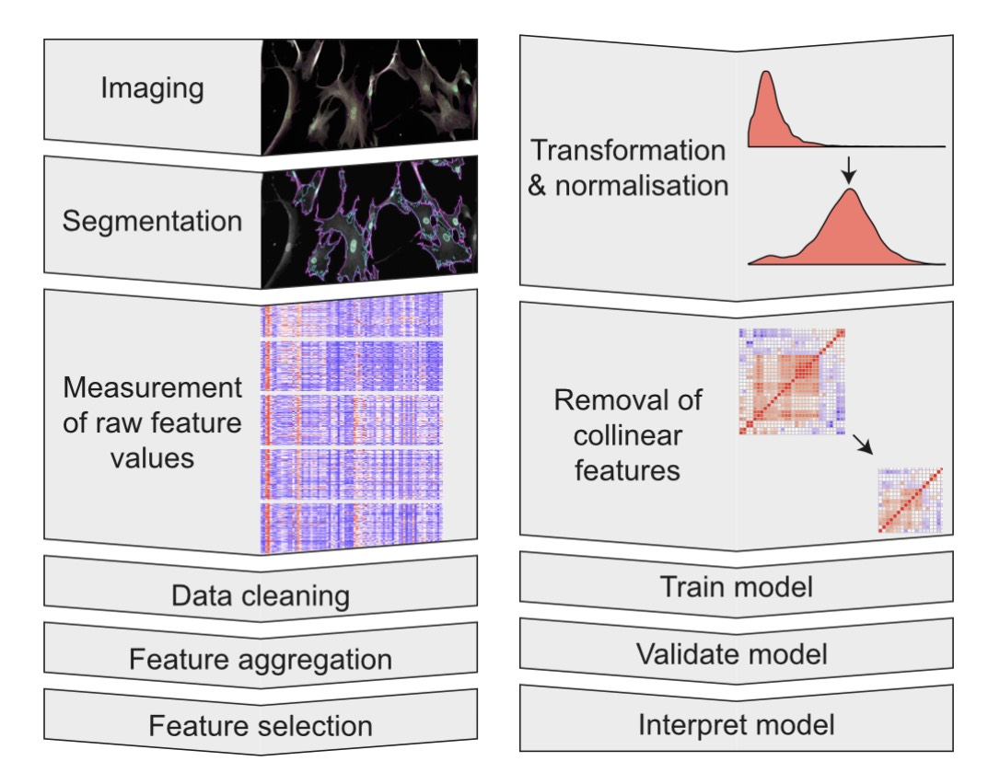
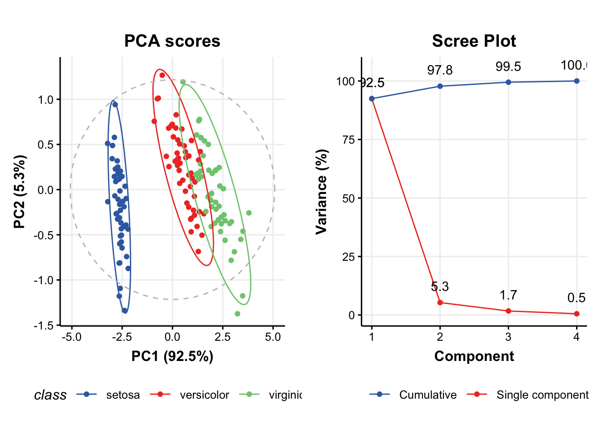

library(parallel) library(lme4)
Loading required package: Matrix

### Install and Load required packages # if (!any(rownames(installed.packages()) == "DoubletFinder")){ # remotes::install_github('chris-mcginnis-ucsf/DoubletFinder') # } …
## Load packages library(ExperimentHub) library(Seurat) library(DESeq2) library(data.table) library(tidyverse) library(RColorBrewer) ## retrieve data eh <- ExperimentHub() …

library(tidyverse) library(here) library(ggsignif) library(ggh4x) dfb <- read.csv(here("projects", "data", "221001_barplot.csv"), header = FALSE) dfb ## …